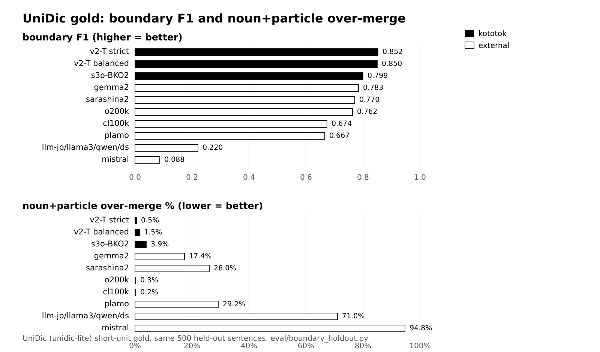
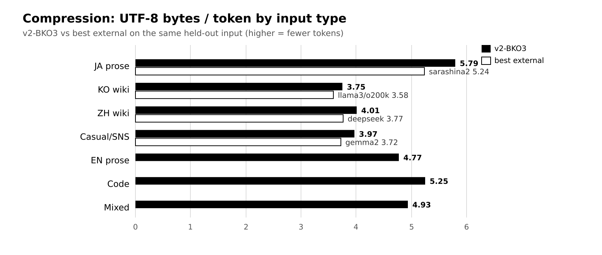
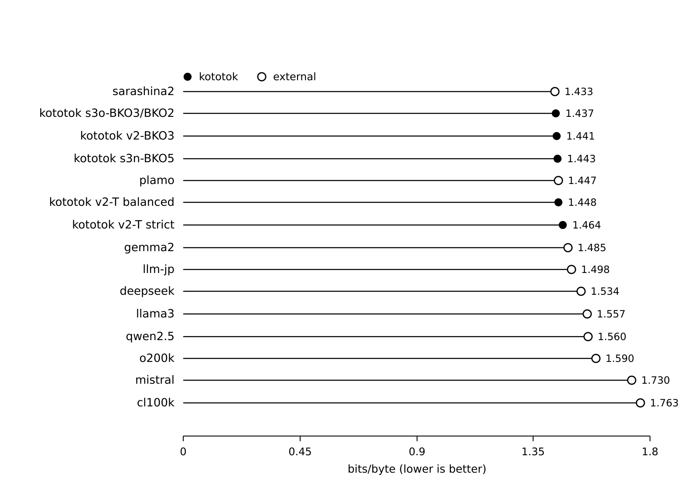
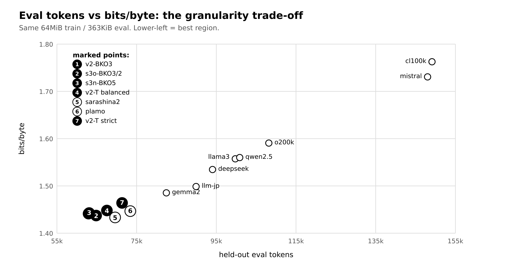
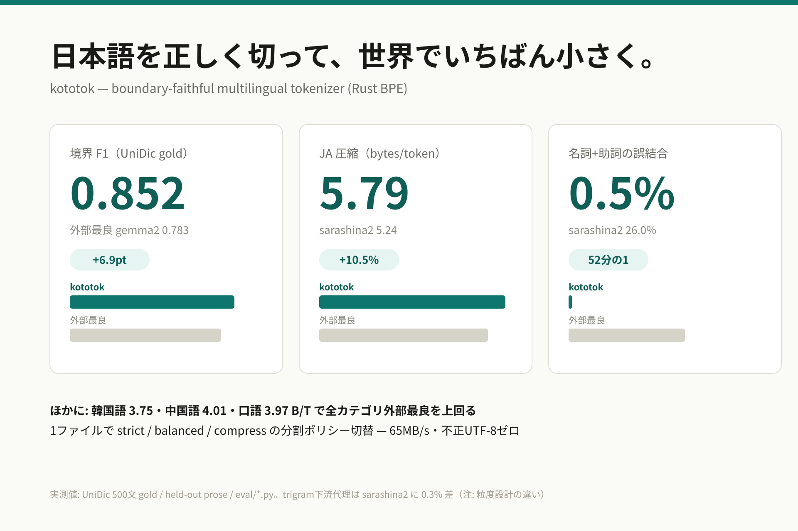

AIが日本語を読む前の
「切り分け役」
言葉を正しい切れ目で分けて、しかも少ないかけらにまとめる。
日本語と多言語のために作ったトークナイザー kototok の紹介です。
AIが文章を「食べる」前に、一口サイズに切る道具です
AIは私たちが書いた文章をそのまま理解できません。料理の下ごしらえのように、文章を小さなかけら（トークン）に切り分けて番号に変えてから読み込みます。
文字のままでは、AIは計算できません。
ここを担当するのが kototok です。
かけらが少ないほど、AIは速く安く動きます。
AIの応答速度や利用料金、一度に読める文章の長さは「かけらの数（トークン数）」で決まります。
言葉の途中で変に切れたり、別の言葉とくっついたりすると、AIが意味を学びにくくなります。
「日本の首都は東京です」の切り方を見比べる
日本語には単語の間のスペースがありません。そのため従来のトークナイザーは「くっつきすぎ」か「刻みすぎ」に陥りがちです。
辞書を持たずに、文字の並びと統計だけで見分ける
日本語の単語辞書を内蔵すると重く複雑になります。kototok は文字の種類と使われ方の偏りから、正しい切れ目を自動で見つけます。
ひらがなから漢字に切り替わる場所（助詞＋次の名詞）は自動で分割します。反対に、漢字からひらがなへ続く場所では、後続のばらつきを統計で調べて「送り仮名」と「助詞」を見分けます。
- 不正 UTF-8 ゼロ（0%）：文字の途中でバイト列をちぎらない学習設計により、壊れたトークンを一切作りません。
- 完全可逆：切り分けたかけらを戻せば、元の文章と 1 文字も違わず復元できます。
- 最悪計算量 O(N)：Rust の決定性オートマトン（DFA）で処理するため、長大で特殊な入力でも急に重くなりません。
日本語を正しく切って、いちばん小さくする
公開中の主要トークナイザーと同一条件で実測した、kototok の 3 つの中心結果です。
外部の日本語モデルと比べても、切れ目の正確さが頭一つ抜ける
開発時に使った Sudachi とは別系統の辞書（UniDic）で 500 文を採点しても、kototok の 3 モデルが上位を独占しました。
- 上段（F1）：棒が長いほど、人間と同じ切れ目で切れています。
- 下段（誤結合率）：棒が短いほど、名詞と助詞が誤って合体していません。
- o200k・cl100k は日本語をほぼ結合しない（送り仮名保持 2.2%・0.0%）ため下段が低くなっています。

日本語だけでなく、測った 7 分野すべてでトップの圧縮効率
外部最良の sarashina2（5.24）を +10.5% 上回ります。同じ文章をより少ないかけらで表せるため、AIの計算量と利用コストを抑えられます。
- 横軸が大きいほど優秀：1 つのかけらに多くの文字を詰め込めています。
- 日本語・韓国語・中国語・口語/SNS・英語・コード・混在の 7 カテゴリすべてで高い効率を記録しました。

韓国語・中国語・英語・プログラムも 1 モデルで高効率
普段の文章や仕事では、日本語に英語・コード・SNS の口語・アジア圏の言語が混ざります。kototok（v2-BKO3）は 7 分野すべてをカバーします。
1 ファイルで切り方を切替。速くて、文字を壊さない
用途に合わせてモデルを作り直す必要はありません。読み込み時の設定だけで切り方を変えられ、Rust 実装で高速に動きます。
語彙ファイル内にタグ付きの調整層を収めているため、再学習なしで切り替えられます。
tiktoken o200k の 14.6 MB/s と比べて約 4.5 倍の速度。外部辞書が不要なため、配布や組み込みもシンプルです。
一般的なバイト単位 BPE（例：32k 実データでの hf-bpe は 2.17%）と違い、途中で文字化けするトークンを学習語彙に一切含みません。
簡易な言語モデル評価では、sarashina2 に 0.3% 及ばない
低いほど「次の文字を当てやすい」指標です。1 位の sarashina2（1.433）に対し、kototok 最良は 0.004（約 0.3%）差の 2 位でした。
- 上位 7 モデル中 5 つを kototok が占有。
- gemma2（1.485）・llama3（1.557）・qwen2.5（1.560）・deepseek（1.534）・o200k（1.590）・mistral（1.730）など、汎用の多言語トークナイザーはすべて上回りました。
- 勝てなかった相手は、より大規模な日本語コーパスで学習された日本語特化の sarashina2 のみです。

なぜ 0.3% 差が出るのか：切り方の設計トレードオフ
- 横軸（左ほど良い）：評価文を何個のかけらで表現できたか。kototok v2-BKO3 は 62,930 個で最少（sarashina2 は 69,587 個、mistral は 147,947 個で 2.3 倍）。
- 縦軸（下ほど良い）：簡易モデルでの予測しやすさ（bits/byte）。
「日本｜の」のように助詞をきちんと分けると、直前 2 個しか見ない単純な trigram モデルでは少し不利になります（strict で約 0.02 bits/byte 増）。文脈を長く読める本格的なニューラル言語モデルの学習を現在進行中で、実運用での差を確かめています。

kototok が目指す、日本語 AI の新しい土台

- 正しく切る：辞書なしで境界 F1 0.852、名詞＋助詞の誤結合は 0.5%。
- 小さく速い：日本語 5.79 B/T、韓国語・中国語など 7 分野すべてで外部最良超え、速度 約 65 MB/s、不正 UTF-8 0%。
- 正直な現在地：1 ファイルで 3 モード切替に対応。簡易テストでは sarashina2 に 0.3% 差で、本格的な言語モデル学習で検証を継続中。